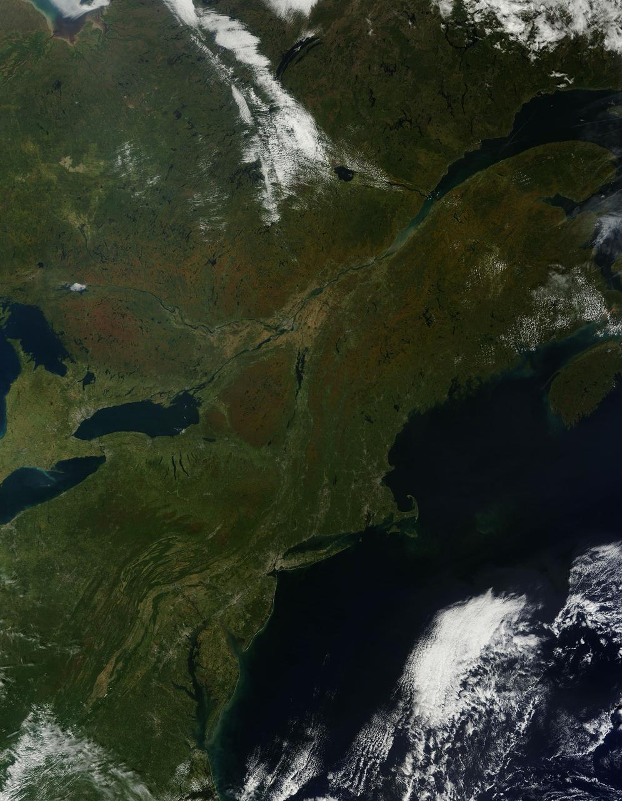
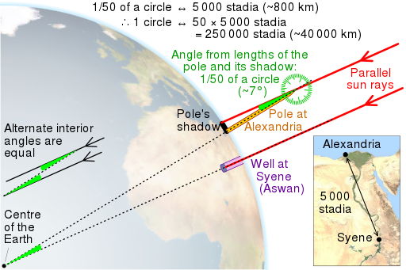
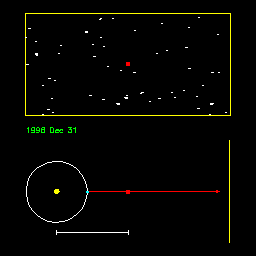
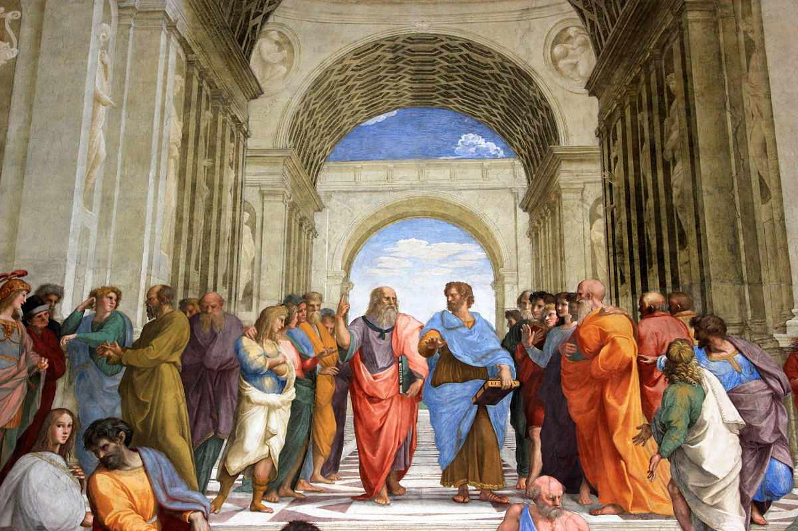

Astronomy 101
The Ancient Greeks were the first people to start empirically gathering data about the world around us
They accomplished all of this using rudimentary equipment. Such as sticks and rulers. With this equipment, they were able to make very precise measurements, only off by a tiny amount. Keep in mind that the
Greeks were ancient, not stupid. This means they were able to use their scientific reasoning, and were very scientific with their findings
- Erastosthenes

- Found the radius of the entire Earth using a stick and the shade
- Hipparchus of Nicaea
- Cataloged over 850 stars and their positions. System of position (lat. and long.) still used today
- Developed a system to measure the brightness of stars. This system is still in use today, with a lot more math behind it.
- Discovered the precession of the equinoxes. Fancy science jargon for saying the shift in the Earth's axis of rotation relative to the sun.
- Ptolemy of Alexandria
- Proposed the geocentric model of the universe. Meaning the Earth is in the middle, and every other object orbits the Earth.
- Created a system of star classification that is still used today. He developed on the works of Hipparchus.
- Authored the Almagest, a comprehensive treatise on astronomy. Used for centuries after its creation.

Why did they believe in the Geocentric Model?
People think that the Greeks believed in the geocentric model for egocentric reasons. The truth however, is very far from this myth. Simply, if the Earth orbitted the Sun, the stars in the sky should exhibit parallax, yet they didnt! In reality, they did, except they did not have the technology to look at the very small movement of stars (smaller than 0.7 arcseconds).
This will all change once Galileo enters the game, for now this is the story.

School of Athens... Most famous picture of Pluto and Socrates
All images utilized in this project were obtained from sources other than my own.